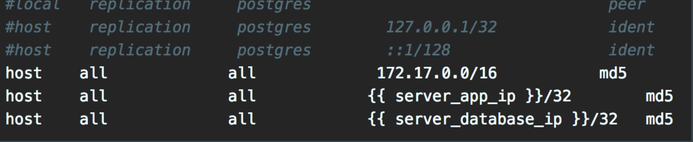

Primeiros passos com ansible
Curso introdutório a ferramenta Ansible
Instrutor: Romulo Scampini
Realização: Code Prestige Apoio: iMasters
A Code Prestige é uma escola especializada no ensino de programação. Desenvolvemos diariamente artigos, cursos, livros digitais, vídeos e outros conteúdos que já auxiliaram mais de 4000 pessoas de todo o Brasil a alcançarem seus objetivos profissionais.
Visite o nosso site e nos siga nas redes sociais!
Instrutor

- Nome: Romulo Scampini
- Idade: 27 anos
- Minibio: Cofundador da CodePrestige, atua com Desenvolvimento/DevOps, palestrante em eventos e eterno estudante.
Requisitos
- Python (versão >= 2.7)
- Ansible (última versão - LTS)
- Editor de texto
Ou
* VM do Ubuntu já com Ansible, Python e Visual Studio Code instalados
Antes de começar...
- Problema
- Propostas de solução
- Estrutura do ansible
- Ansible
Problema
- Tarefas e configurações de Infra (Ops) manuais
- Automação existente era com shell script
- Cenário antes das ferramentas de automação

Qual a solução ?
Ansible
O que é?
Uma ferramenta open-source para automatizar tarefas relacionadas à infraestrutura.
Base:
- Estrutura interna do Ansible
- Estrutura básica de um do projeto
Estrutura interna do Ansible
Estrutura interna do Ansible
- Escrito em Python
- Versão Atual - 2.4
- Módulos
- Python
- Templates
- jinja2
- YAML
- Conexão via ssh (*ou local)
- Python
- jinja2
Estrutura básica de um do projeto
Ansible ❤ YAML
Variáveis
- Não é necessário especificar o tipo
nome_var: valor
informacoes_db:
host: 172.17.0.1
port: 5432
db: nome_db
username: usuario_db
password: 123456
Utilização das variáveis
- Variável simples:
usuario: codeprestige
grupo: "{{ usuario }}"
informacoes_db:
host: 172.17.0.1
port: 5432
db: nome_db
username: usuario_db
password: 123456
db_port: "{{ informacoes_db.port }}" OU
db_port: "{{ informacoes_db['port'] }}"- Array:
usuarios: [ ]grupo:
- codeprestige
- imastersusuarios: "{{ user_cp|default('root') }}"usuario_sudo: TrueMódulo
Módulo
- É o que irá realizar a tarefa
- É o que permite e facilita a execução de tarefas
- Uma das maiores vantagens do ansible, e a quantidade de módulos já prontos
Playbook's
Playbook's
- Declaração de tarefas a serem executadas.
- É a "receita" do que fazer.
Playbook's
---
- hosts: all
tasks:
- name: create folder
file:
path: /tmp/codeprestige-ansible
state: directory
- name: copy file
copy:
src: /etc/hosts
dest: /tmp/codeprestige-ansible/hosts
Exercício 1
Objetivo
Criar um projeto ansible para criar uma pasta e copiar o arquivo /etc/hosts para a pasta criada
- Criar os arquivos básicos para um projeto ansible
- ansible.cfg
- inventory
- run-ansible.sh
- Criar um playbook para executar as tarefas
- Configurar as tarefas no playbook
- Executar o playbook e conferir o resultado
Resumo
Estrutura de arquivos base:
- Ansible.cfg
- Arquivo com configurações do ansible
- Inventory
- Determina em e quais máquinas serão instalados/configurados os itens do playbook.
- run-ansible.sh
Templates
Templates
- Permite a customização e criação de arquivos com conteúdo dinâmico.
- Por ex, um arquivo de configuração do postgres (pg_hba.conf), onde o IP liberado para acesso ao banco varia de acordo com o ambiente (Produção, Homolog, etc).
Exemplo de arquivo template
Utiliza outra task para copiar o template.
Roles
Roles
Conjunto de tarefas e/ou variáveis comuns
Estrutura de Role

Hierarquia
Hierarquia do projeto
- roles
- group_vars
- host_vars
- playbook.yml
- tempo de execução
Exercício 2
Objetivo
Criar um projeto ansible com role para instalar o VirtualBox e o Vagrant
- Criar um projeto com a estrutura básica
- Criar a role com a estrutura básica
- Definir as tarefas para cada tipo de S.O.
- Incluir condição para chamar as tasks referente ao S.O. correto
- Incluir no playbook a chamada da role
Projeto Final
Objetivo
Instalar o nginx no Ubuntu e copiar uma página index.html para ser exibida
Prazo
1 Semana
Requisitos
- Verificar se o S.O. é Ubuntu antes de iniciar a instalação
- Copiar o arquivo index.html para o DocumentRoot do nginx
- O index.html deve ter uma variável, e a mesma deve ser definida no projeto (Em qualquer nível)
Desafio
Criar uma role que faça essa instalação, e preparar a instalação para CentOS também. A própria role deve identificar qual o instalação deve realizar de acordo com S.O.
Entrega
A entrega deve ser feita nesta issue do projeto no GitHub
Referências
- Ansible: Página oficial
- Ansible: Documentação Oficial
- GitHub: Ansible